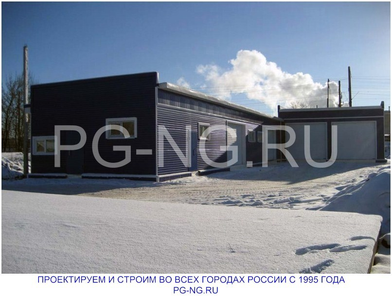
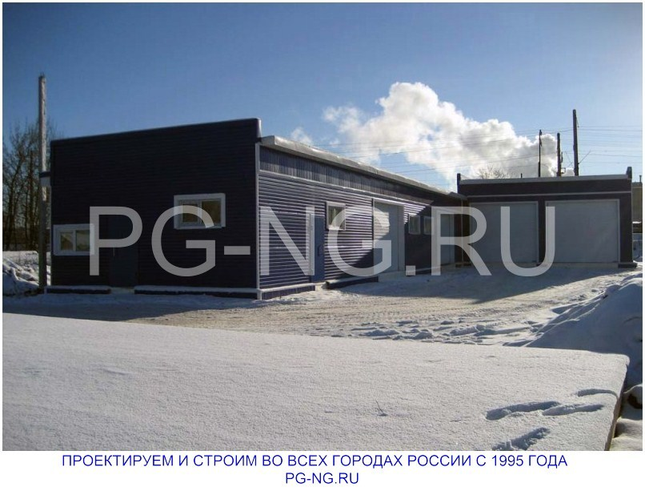

Строительство
Строительство в Череповце и других городах России
Строительство в Череповце и других городах России жилой недвижимости, коммерческих зданий и промышленных объектов. Работаем с 1995 года. За это время нашими специалистами построено более 500 объектов различной степени сложности.
Работаем с типовыми и сложными заказами. Строим из ЛСТК под ключ и присоединяемся на любом этапе стройки. Сдаем объект, отвечающий всем требованиям эстетики и безопасности.
Мы строим:
- многоквартирные жилые дома высотой в 3 4 этажа (отдельные дома, жилые комплексы, таун-хаусы и пр.);
- частные коттеджи и каркасные дома ;
- коммерческую недвижимость (офисные центры, магазины, торгово-развлекательные комплексы, склады, павильоны, автосалоны и автосервисы, логистические здания и пр.);
- промышленные объекты (заводы, цеха, фабрики и пр.);
- прочие объекты (каркасные гаражи, бани, смотровые площадки пр.).
Принимаем активное участие в государственной программе федерального значения по расселению ветхого и аварийного жилья. В рамках программы нами построено и сдано в эксплуатацию более 50 многоквартирных жилых каркасных домов из ЛСТК.
В работе используем современные материалы и технологии, что позволяет выполнять строительство в короткие сроки с неизменно высоким качеством работ и в любое время года.
Пристройки, надстройки к объекту
Коттеджей и объектов коммерческой недвижимости с каждым годом строится все больше. Но многие из них отличаются скромной архитектурой или неудачной планировкой. Решение проблемы надстройка этажа, мансарды или пристройка к капитальному зданию.
Большие возможности в этом случае дает применение технологии ЛСТК. Конструкции не требуют больших финансовых вложений, при этом могут кардинально улучшить эксплуатацию объекта: увеличение полезной площади, уменьшение затрат на отопление с минимальными затратами на строительство.
Кровельные работы
Выполняем реконструкцию кровли в Череповце и других городах РФ для зданий вторичного фонда недвижимости.
Кровельные работы ЛСТК для новостроек.
Преимущества и гарантии строительства и сотрудничества
В работе применяем только металлопрофиль заводского производства. Сотрудничаем со шведским заводом Lindab и ведущими отечественными производителями. Результат: ЛСТК в точности соответствуют проектной документации и регламенту, здание ЛСТК возводится в короткий срок и без нарушений.
Гарантийный срок службы объектов каркасного строительства из ЛСТК до 100 лет.
Если Вас интересует быстрое, недорогое, качественное строительство, мы разработаем или подберем типовой проект, выполним строительные, монтажные и отделочные работы. Все под ключ от одного исполнителя. При строительстве по нашему проекту у другого подрядчика услуга авторский надзор за соблюдением технологии.
Также мы предлагаем услуги строительной экспертизы и обследования зданий перед продажей, на этапе строительства или в рамках судопроизводства.

 
